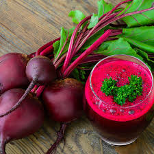

The first thing we are going to do is proceed to determine the etymological origin of the term
vegetable. In this case, we find that it emanates from a Latin word: vegetare, which can be
translated as "grow."
Tom Robbinds
Some diseases
Veggie
Disease
Beets
Beeturia
Carrots
Carotenosis

Beets
Carrots
first thing we are going
first thing we are going
Reakky informatis
The first thing we are going to do is proceed to determine the etymological origin of the term
vegetable. In this case, we find that it emanates from a Latin word: vegetare, which can be
translated as "grow."